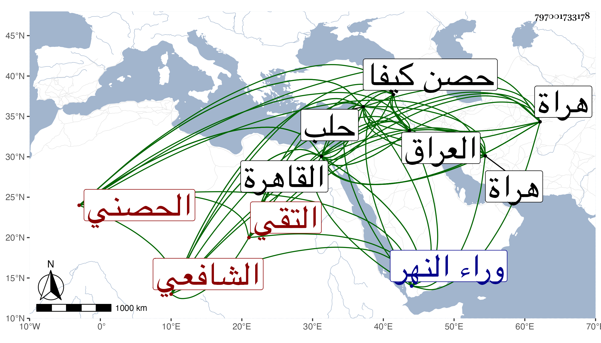

0902Sakhawi.DawLamic.ITO20230111-ara1.EIS1600.797001733178
Biography ID: 797001733178
212
أبو بكر بن محمد بن شاذي التقي الحصني الشافعي نزيل القاهرة . ولد سنة خمس عشرة وثمانمائة بمدينة حصن كيفا وكان أبوه من مياسير تجارها فنشأ في كفالته وحفظ القرآن والشاطبية والحاوي والشافية والكافية وتمام عشرة كتب على ما كان يخبر وجود القرآن على بعض شيوخ بلده بل وقرأ القراآت أيضا على ولد لابن الجزري وأخذ عنه طريقة في تقرير تصريف العزى وكذا أخذ المتوسط والجاربردي وغيرهما عن الجلال محمد بن العز الحلوائي وكتب المنسوب وارتحل فلقي البساطي بحلب في سنة ست وثلاثين واستفاد منه يسيرا وأثنى البساطي على جودة فهمه حتى أنه قال لم يجئنا مما وراء النهر مثل هذا الشاب ثم إنه لم يتيسر له دخول القاهرة إلا في مرض موته وذلك في سنة اثنتين وأربعين فقرأ على القاياتي في العضد وكان يحكي ما يدل على أنه لم يرتض أمره فيه وعلى العلم البلقيني في الفقه والعلاء القلقشندي في آخرين منهم الشمس الشرواني وعبد السلام البغدادي وأخذ القراآت رفيقا لابن كزلبغا عن حبيب العجمي وأقام يسيرا ثم عاد لبلده فوجد قاصد صاحبها متوجها إلى هراة فرافقه إليها فلزم عالمها ملا محمد بن موسى الجاجرمي تلميذ يوسف الحلاج تلميذ السيد حتى قرأ عليه العضد بكماله وسمع شرح المواقف وشرح الطوالع وأقام هناك خمسة أعوام فأكثر مديما للاشتغال مجدا في التحصيل إلى أن برع وارتفق في إقامته بميراثه من أبيه وحصل هناك من نفائس الكتب أشياء وعاد من طريق العراق فحج ودخل القاهرة بعد أن اقتطع بمكان يقال له وادي السباع وأخذ جميع ما معه من كتب وغيرها فألقيت الكتب بالبرية لعدم التفاتهم إليها ولكنه لم يجد محملا لها فتركها ونجا بنفسه مع أخذ يسير مما أمكنه منها وتأسف كثيرا بسببها حتى أنه صار كلما تذكر يتألم وأنشد لنفسه
| يا نفس لا تجزعي مما جرى | وارضي بتقدير العزيز الغفور |
| واتلي على الطاغين في ظلمهم | |
| ألا إلى الله تصير الأمور |
وتصدى حينئذ وذلك بعد سنة خمس وأربعين للإقراء بجامع الأزهر وبالمدرسة الملكية والبدرية المجاورين للمشهد لسكناه هناك وقتا وتجرع فاقة كبيرة إلى أن استقربه الزيني الاستادار في تدريس مدرسته الأولى المقابلة للحوض المجاور لبيت البساطي كان بين السورين ثم عزله عنها بطعن أبي العباس المجدلي عنده في علمه وترجيحه لنفسه عليه وقرر المذكور عوضه ثم لم يلبث أن صرفه حيث ذكر له عنه ما يقدح في ديانته وأعاد صاحب الترجمة ولزم الإقامة بها على طريقته في الإقراء إلى أن اتفقت كائنته مع زوجته ابنة الجمال بن هشام لصقت به لأجل غرضها كلاما قبيحا تنكره القلوب السليمة فأمر الظاهر جقمق بنفيه فشفع فيه وانتمى لجانبك الأشرفي الذي عمل شادالشر بخاناة في الأيام الاينالية وتقدم في ايام الظاهر حشقدم فأخذه عنده وصار يجلس للإقراء هناك بمدرسة سودون المؤيدي أحد الأمراء الآخورية بالقرب من زقاق حلب وجامع قوصون حتى مات وحصل له به ارتفاق وكان قد عين مرة لمشيخة صهريج منجك ثم لم تتم لمساعدة الأمين الأقصرائي لولد المتوفى وتألم التقي لذلك كثيرا وكذا استقر في تدريس التفسير بالجمالية البيرية بعد السفطي وفي الإفادة بمدرسة الجاي ثم بأخرة في تدريس الأيوان المجاور للإمام الشافعي ونظره عقب إمام الكاملية مع تقدم غيره في الفقه عليه رغبة في ديانته وخيره وقبل إذ ذاك (( القائل هو عبد البر بن الشحنة كما رأيته بخطه عند المؤلف رحمه الله )):
| تطاعنت الغواة بغير تقوى | على درس الإمام الشافعي |
| فلم يشف الإمام لهم غليلا | ولم يجنح إلى غير التقي |
وصاهر أحمد بن الأتابكي تنبك البردبكي على ابنته واستولدها ولدا ومن قبلها تزوج سبطة الزيني عبد القادر البلبيسي كاتب العليق واستولدها ذكرا وأنثى كل ذلك وهو ناصب نفسه لإلقاء الفنون حتى أخذ الناس عنه طبقة بعد طبقة بل أخذ عنه طبقة ثالثة وهو لا يمل ولا يفتر وكثرت تلامذته من كل مذهب وصار شيخ العصر بدون مدافع واشتهر بجودة التعليم ومزيد النصح والذكاء لكن بدون طلاقة وممن أخذ عنه أخي بل وحضر عنده في إجلاس عمله وقرض لي بعض التصانيف فبالغ وكان أحد القائمين على البقاعي في كائنة ابن الفارض وكتب على فتيا بمنعه من النقل من التوراة والإنجيل هذا مع أنه قرض له على كتابه الملجئ للاستفتاء عليه بذلك قصدا للدفع عن عنقه كل هذا مع الديانة والأمانة والتواضع والتهجد والانجماع عن أكثر بني الدنيا وسلامة الصدر والفتوة والرغبة في زيارة مشاهد الصالحين وملازمة قبر الليث في كل جمعة غالبا وقد حج بأخرة أيضا ورجع وهو متوعك بحيث أشرف إذ ذاك على الوفاة ثم عوفي وأقام مدة إلى أن مات في يوم الأحد ثامن ربيع الأول سنة إحدى وثمانين وصلى عليه في يومه بسبيل المؤمني ودفن بتربة جاره الأمير جكم قرا بالقرب من ضريح الشافعي وتأسف المسلمون على فقده رحمه الله وإيانا .
